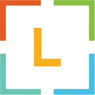
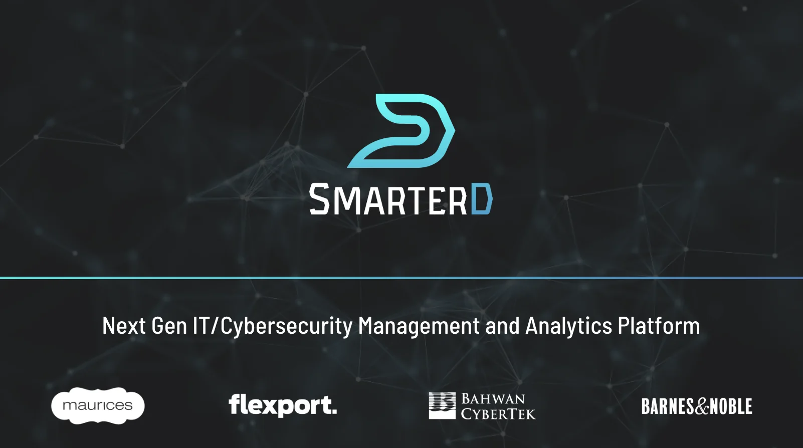
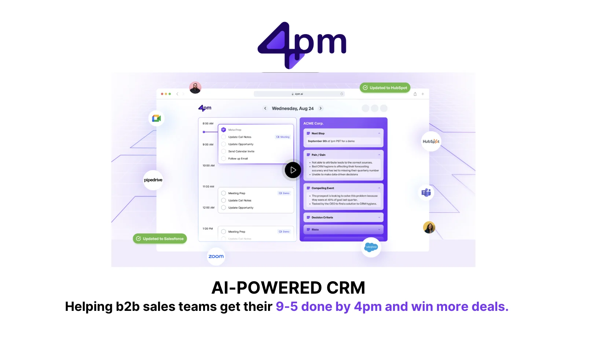
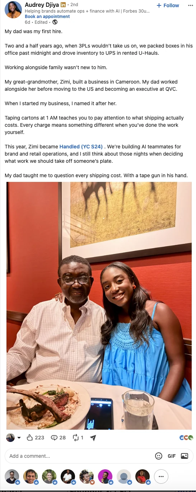
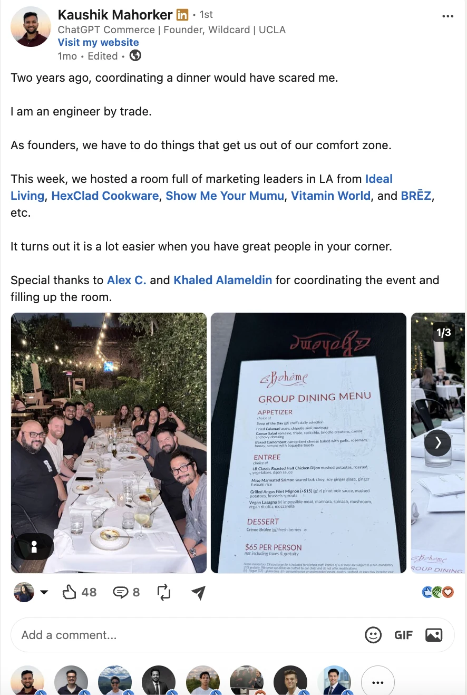
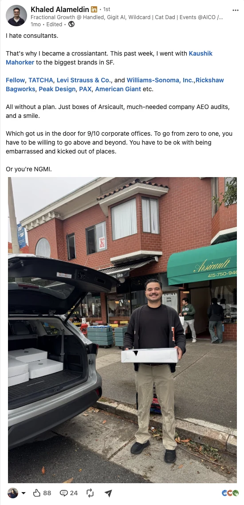

Leeroo × Cracked GTMFor Majid, Alireza and Arshad, from Priyanka and Khaled
Hey Majid,
Great chatting last week, and thanks for walking us through Leeroo. The telecom project is impressive, especially the scope of the work and how quickly you delivered it.
I think the next step is finding 2 to 3 more enterprise customers with similar problems. That’s what will tell us which buyers, use cases and messages are repeatable.
For context, I’ve sold into the CIO buying group before, including a $180K deal with Flexport working with their CISO and Head of Data. The big learning was that enterprise buying happens in groups, so you have to get a lot of different people aligned. That makes tight sales assets and a really good sales process extra important.
Here’s how Khaled and I would approach the next 90 days. It’s a starting point, and we’d adjust as we learn.
We really care about our craft. Since everything is still early, we can only guarantee inputs, not outputs. What we do guarantee is best in class inputs: social, outbound, copy, website and sales.
You have a large customer already, so we’d like to make more of a splash around this. Your website, case study, one-pager and sales deck need to feel as sophisticated as the work.
Sit down with your customer, review call recordings and design sales assets.
Rewrite your homepage opening around what you actually delivered.
Write and design the case study around their problem and the outcome.
A one-page pitch and a deck you can use in enterprise calls.


Sample deck design
On enterprise calls, we’d lean into two things. First, your founder profiles: ex-Meta AI and LinkedIn, with EPFL PhDs. That builds trust with technical buyers fast. Second, pitching Leeroo more like an agency or MSSP that gets the work done, not a platform they have to evaluate. Buyers get that right away.
Sales process and discovery are very important on enterprise sales calls, so we’d spend real time on what to ask, how to qualify, and how to run a demo that ends with a next step.
We’d go after companies that look like your telecom customer and have a strong intention to buy, like an active legacy migration, open data platform roles, or a data leader posting about AI projects stalling. We build our own lists and do research ourselves (scraping, enrichment, a lot of automation) for outbound, so every message is written for that company instead of blasted to thousands of people.
For these first few, I’d lead with the outcome (getting the migration done) more than the platform. Buyers get that right away, and it opens the door to the next project.
We’d do a short call with you each week and turn it into 2 to 3 LinkedIn posts for you and Alireza. Khaled leads this side, and you approve everything before it goes out.
The posts would be written for the people who actually buy Leeroo, probably CIOs, heads of data and data platform leads at large companies in telecom, banking and healthcare.
We’d also run one creative campaign to get in front of buyers who are hard to reach through outbound. That could be a small dinner with 8 to 12 data leaders, or something less conventional, like delivering croissants to target accounts. We’ve done both before, and we’d pick based on where the right buyers are most likely to engage.



We’d do two to three calls a week to go over what went out, what we learned and what’s next, plus a shared Slack channel.
The goal after 90 days: a clearer pitch, proof from more customers, a repeatable way to generate qualified conversations, and a better understanding of what it takes to close the next enterprise deal.
If this direction makes sense, we can go through it together on our call and figure out where to start.